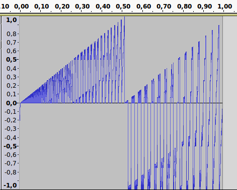
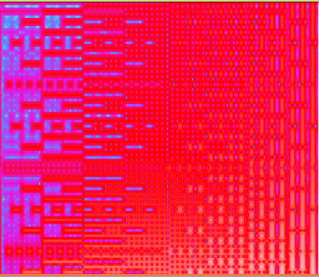

Your browser doesn't support the features required by impress.js, so you are presented with a simplified version of this presentation.
For the best experience please use the latest Chrome, Safari or Firefox browser.
ByteBeats
OSAMC 4/2016
What is a bytebeat?
a waveform calculated as a function of time
A typical bytebeat
Simple example at 8khz, 8bit
((t >> 11) % 4) * t
Simple example at 8khz, 8bit
((t >> 11) & 3) * t
Sierpinsky Harmonies with bit operators
(t >> 5) & t
Sierpinsky Harmonies with bit operators
Sierpinsky Harmonies with bit operators
Variations & related